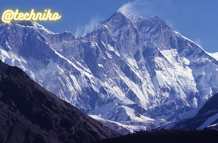

The Ultimate Leh Ladakh Travel Guide (2022) – Explore the Unforgettable Land of High Passes!

Julley from Leh! That means Hello in Ladakh and you’ll find that everyone here is itching to say it to you.
Leh is the super friendly mountain city that is waiting for you to visit them.
When you arrive here, either by bus or plane, you’ll be greeted by the most spectacular panoramic views of snow-capped mountains, ancient palaces, and Buddhist stupas.
It’s also a welcome paradise from the busy, dirty cities like Delhi and Rajasthan.
Here’s the ultimate Leh Ladakh travel guide including how to reach Leh, top things to do, where to stay, and what to eat!
The ultimate Leh Ladakh travel guide
Where is Leh Ladakh in India?
Leh Ladakh has an interesting mix of cultures and food as it’s on the border of China and its history is closely related to Tibet!
You’ll probably question what country you’re in a lot while you’re here and that’s the beauty of Leh.
What is the best time to visit Ladakh?
The best time to visit is actually in the monsoon season between June – September as Ladakh is a dry spot in a country of constant rain!
They also shut the road after mid-September so it’s best to visit before then or fly!
It’s beautifully sunny every single day at this time and everything almost looks saturated as you’re closer to the sun and higher up at 3,500 metres!
It’s also perfect weather for trekking and is what most travellers flock here for.
How to reach Leh Ladakh: flying vs. the road
There are usually two choices for approaching Leh Ladakh.
You can directly fly to Leh Ladakh from Delhi which is what most travellers prefer as you can skip the long bus journeys up through the Indian states of Himachal Pradesh and Jammu & Kashmir.
But, this means that you cannot acclimatise very easily and you may suffer from altitude sickness and need a few days to adjust.
If you are prone to altitude sickness, you can get tablets to help with it. The other is to take the long bus journey from Manali to Leh.
This is the cheapest option and actually is not as dangerous as people make out.
Yes, the roads are crazy but the views are absolutely jaw-dropping and are worth the time spent alone.
You’ll pass through valleys, mountain passes, and waterfalls. There’s absolutely no sign of life around in many parts and it’s an experience you won’t forget.
Taking the bus from Manali to Leh
I took the 18-hour bus from Manali to Leh, which was actually 20 and we arrived in the middle of the night.
Our bus driver did a great thing by dropping us off in the backpacker district of Changspa where there are tonnes of guest houses. But, little were we to know that none would be open for business after midnight!
For a little while, we hung out with some other travellers from the bus in a bakery which turned into a bar late at night and just played the same Ed Sheeran song over and over again.
We had chai while deciding the next plan of action, which was basically to try every guesthouse in the area!
After a little while, we couldn’t find anywhere and a bar called KC garden offered for us to stay at their place for the night. It was an, which was used for group get-togethers and parties!
It had no windows, was freezing cold, and let in all the noise of dogs barking. However, it was a place to crash for the night and we had loads of blankets to keep warm.
It was really generous of him as he didn’t have to offer anything at all. He also didn’t charge which was really kind.
We were stranded in Leh Ladakh
The guy who owned the place said we could sleep in until noon, but when the workers came in the next morning at 7 am – they played really loud music so we would get up!
At first, it was just Buddhist chanting music which was actually really nice.
By 9.30 am, they upped the ante with techno music and that’s when everyone groggily got out of their sleeping places.
The next day, we had a chai together, thanked the guys at KC garden, and then went to try and find a room.
Where to stay in Leh Ladakh: Changspa
We ended up staying at Hotel Asia which turned out to be the cheapest.
It was 500 a night with a shared bathroom, I hardly slept each night due to the light and noise but it did have hot water every single day!
The top things to do in Leh Ladakh
Most people use Leh as a base in Ladakh as it’s the main city with good connections to Nubra Valley, Pangong Lake, and Srinagar in Kashmir.
But, there are lots of things to do in Leh Ladakh itself.
It is really gorgeous to explore too with an epic mountain range, historical palaces, and the iconic Shanti Stupa.
You can’t really get bored, even just if you gaze at the scenery around you.
Leh Palace
This would probably be a good first point of call to start off your adventure in Leh. The ancient palace looks down on the rest of the city.
This was the home of Ladakh royalty and was modelled on the Tibetan Potala Palace in Lhasa.
Even though it was built in the 17th century and steeped in history, not many of the ancient artifacts of the royal family remain in the palace.
t’s nine floors of empty rooms save the antique pictures which hang on the walls.
The best part of wandering around this palace is actually the viewpoints from the rooftops!
You can get great panoramic views from all over the city. There aren’t really any restrictions on where you can go here so explore away!